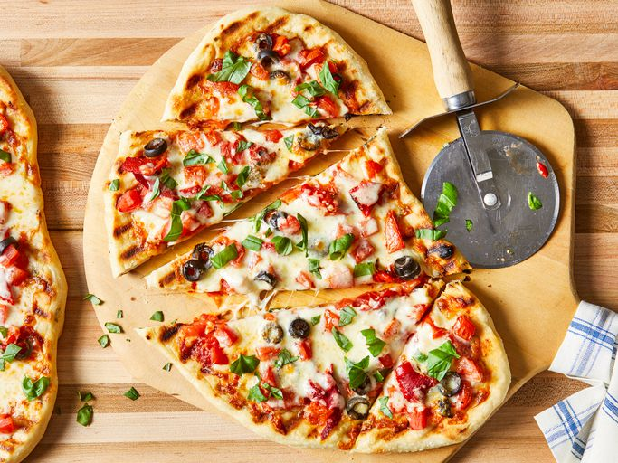

Pizza Recipe

Description
Pizza is usually round, flat base of leavened wheat-based dough topped with tomatoes, cheese, and other ingredients.
Ingredients
- 1 cup warm water (110 degrees F/45 degrees C)
- 1 (.25 ounce) package active dry yeast
- 1 pinch white sugar
- 3 ⅓ cups all-purpose flour
- 1 tablespoon olive oil
- 2 teaspoons kosher salt
- 2 cloves garlic, minced
- ½ cup olive oil
- Pizza Toppings
Steps
- Make dough.
- Carefully place one piece of dough on the hot grill.
- Working quickly, brush garlic oil over crust.
- Add: tomato sauce, chopped tomatoes, olives, red peppers, cheese, and basil.
- Close the lid and cook until cheese melts.